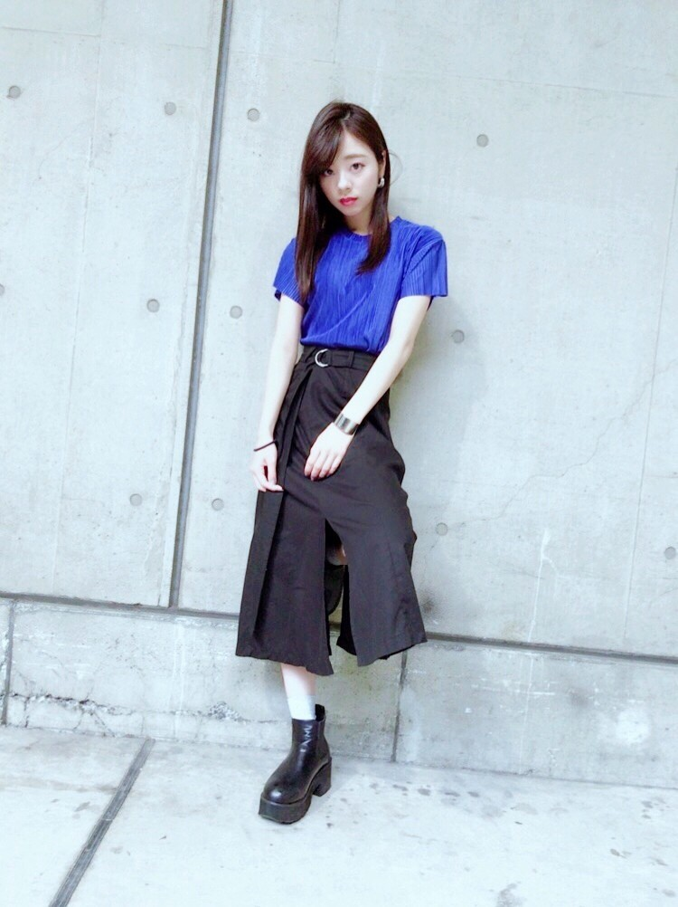

| 2017/09 25 Mon | 川村真洋 私服。コスプレ。母。 |
こんにちわ．
Rottyです！
今週も横浜で個握がありました．
今回も4部と5部で私服着替えました．
因みに次の名古屋もそうしますね♡
4部では...
青のトップス
黒のスカート
ショートブーツ．

トップスの生地はプリーツサテン．
ベルトにシルバーが入ってるので，ピアスとバングルもシルバーにまとめました‼︎
ぁ 靴下もシルバー履いてますね．
5部では...
赤のでっっっかいパーカー‼︎
フード好きなんですよ．
ポケットもあるからお手手入る．
多分これから寒くなるから，普段は中に白黒のボーダーのロンTとか合わせたら可愛いと思います♡
そーいや10月28日握手会ありますね...この日はあれかな？
ハロウィンの時期．
という事でコスプレしちゃおうかな～、、
何したらいいですかねぇ？
去年はカボチャになったんですけど、今年は何になればいいかな♡笑笑
ぁ これ... 缶バッチにピント合ってないですけど，個握のジャンケン大会で渡しているチューリップの缶バッチです♡
（ちはる，えりか，能條，私，まあや，ずー，川後）ヒム子はこの時隣に居たんだけど写ってないのぉ。。。
話変わりますね。
あのねこの前，母親に東京まで来てもらったの。
沢山心配もかけてるし，家族の為に沢山我慢してるからウチの母親はさ...
たまには家の事，仕事の事，色んな事忘れて休んでもらいたくて。
今年は色々あって誕生日プレゼントも渡せなかったから色々含めて全部私からのプレゼントと言うことで、、
仕事後に2人でお肉食べに行って
次の日は仕事中に美容院に行ってもらってて，仕事後にお迎えにいってね♪
美容師さん優しくて，迎えに行っただけなのに私の髪も綺麗にしてくれたんですよ♪
その後2人で大好きなアヒージョとチーズケーキ食べて，カラオケにも行きました＾＾
カラオケは2時間ぶっ通しで私が歌い，
母からのリクエストで，MISIAさんの「オルフェンズの涙」を2回も。。
この歌を聴いた時に母と姉は、『この歌まひろにぴったりや』思ったみたいです＾＾♪
それにウチの母は私より天然ボケで... 一緒に居たら爆笑する事が多々あるんですよ。。笑
見た目はきつそうなのに，喋ったらふんわふんわしてて，私がよく人に言われる事，そのまま全部母にかぶせれます(*^^*)笑
そんな感じでね、
毎回blogの締め方が分からない。
そしたらぁ、、、
今の気持ち言うて締めようかな。
今夜はたこ焼きが食べたい気分。
ギター分からなくて昨夜も心折れた。
今夜も頑張るかぁぁ♡♡
またねん。